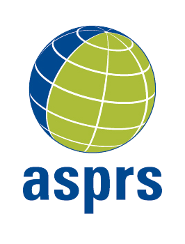

About
This project aims to develop a scalable, open-source toolkit for identifying and analyzing clusters of urban amenities and their underlying colocation networks. By leveraging geospatial datasets such as OpenStreetMap, Ordnance Survey, Overture Maps, and potentially user mobility data, the project will map how different types of amenities co-locate across different cities and benchmark these patterns across different urban geographies. A core feature of the toolkit is the reconstruction of amenity dependency networks, which model how the presence of one type of place (e.g., schools, cafés) conditions the likelihood of others (e.g., parks, gyms) being nearby as well as their dependency networks based on mobility patterns. The tool will enable insights into how amenity configurations align with local demographic profiles, behavioral typologies, and planning priorities.
This project is part of the
NYU CUSP Capstone, and is sponsored by
 Foster + Partners and
Foster + Partners and
 NYU.
NYU.
NAICS Viewer
SafeGraph data contains NAICS Code for each POI.
Open NAICS Code Viewer to explore industry classification codes and their descriptions.
Open NAICS Code Viewer
POI Treemap
Team Members
Ruoyu graduated from the University of Arizona, majoring in mathematics and information science with minors in statistics and data science, finance, and computer science, along with a certificate in entrepreneurship.
He also earned a certificate in advanced business from Columbia University.
After five years of working in startups and NGOs, he returned to school to learn how to utilize data to make a tangible impact on urban residents.
He is an advocate for the dark sky movement, and leads the DarkSky
New York chapter and the
Beijing chapter. He is also the founding treasurer of the
NYU student chapter of
ASPRS (American Society for Photogrammetry and Remote Sensing), and a member of the Student Committee and the Open Tech Committee at
 GISMO (NYC GeoSpatial Information Systems and Mapping Organization).
He is excited to see how research can be integrated into planning and design beyond the academic realm.
GISMO (NYC GeoSpatial Information Systems and Mapping Organization).
He is excited to see how research can be integrated into planning and design beyond the academic realm.

Kunjal Bhatta is a Master's student in Applied Urban Science and Informatics at NYU's Center for Urban Science + Progress, with a background as a licensed architect and city planner in Nepal.
Her professional experience spans public, private, and non-profit sectors, including urban resilience, sustainable development, and data-driven design projects with organizations such as the Kathmandu City Planning Commission and UN-Habitat.
For the Urban Colocation capstone, she brings expertise in urban design, policy, and analytics, with a focus on leveraging data science to promote equitable, sustainable, and human-centered urban development.

Archy is a second-year Master's student at NYU's CUSP, with a background in operations research and large language models, focusing on street and mobility network analysis.
She holds a bachelor's in Information Systems and worked for three years as an R&D engineer at TP-LINK.
Volunteering is her way to explore New York's dynamic communities and urban life, from composting and recycling to rescuing wild animals.
These experiences drive her to build fast-moving, people-centered, and equity-grounded data solutions.